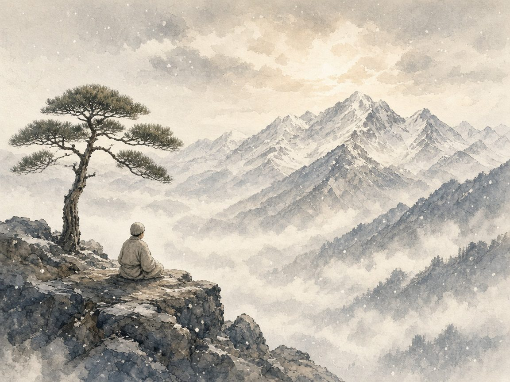

第9回雪山童子（せっせんどうじ）と無常偈
配信日
🔊 読み上げで聴く
出典『大般涅槃経』聖行品（雪山童子・無常偈）／日蓮聖人『松野殿御返事』

今日は、仏教全般でよく知られる「無常」の教えを、雪山童子のお話とともにご紹介します。お釈迦さまが前の世で、雪の深い山で修行をしていたころ、雪山童子と呼ばれていました。ある日、どこからか、尊い言葉の前半だけが聞こえてきます。唱えていたのは、恐ろしい羅刹でした。童子が続きを求めると、羅刹は「腹が減って話せぬ。人の血肉がほしい」と言います。童子は、続きを聞かせてくれたらこの身を与えると約束しました。そして後半を聞くと、のちの人のために岩や木に書き残して、高い木から身を投げました。すると羅刹は帝釈天の姿に戻り、童子を受け止めたと説かれています。その言葉が、こちらです。
「諸行は無常なり、是れ生滅の法なり。生滅滅し已って、寂滅を楽と為す」 出典 『大般涅槃経』聖行品（諸行無常 是生滅法 生滅滅已 寂滅為楽）
「すべては移り変わる」と聞くと、寂しく感じるかもしれません。けれども、変わるからこそ、つらいこともいつまでも続きはせず、今日の一歩で自分も変わっていけます。童子は、移ろう命だからこそ、教えを聞く一瞬を何より大切にしました。日蓮聖人も『松野殿御返事』などの御書でこの童子を引かれ、法を求める心の尊さを示されています。私たちにとっては、二度とない今日のお題目口唱が、その一瞬にあたるのでしょう。